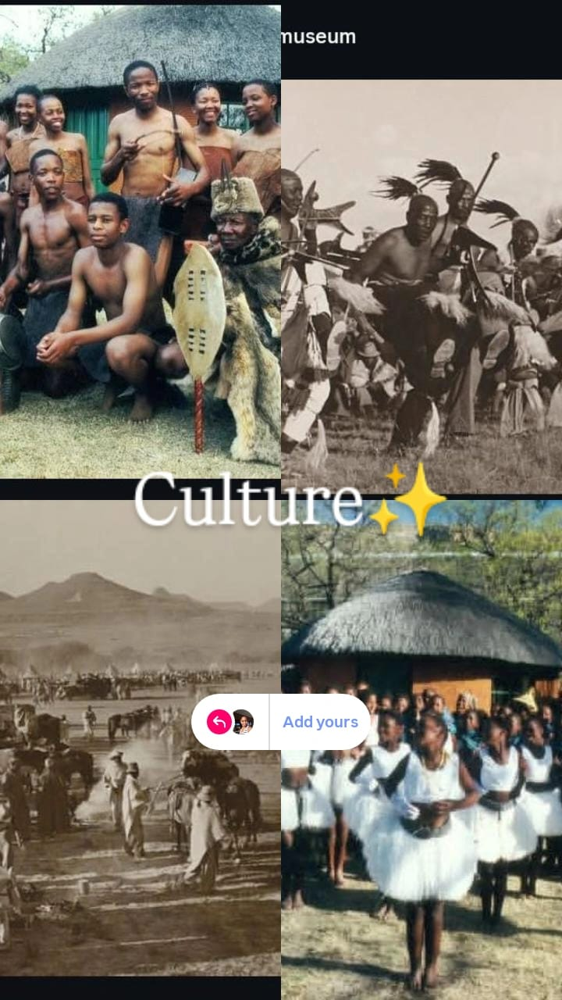
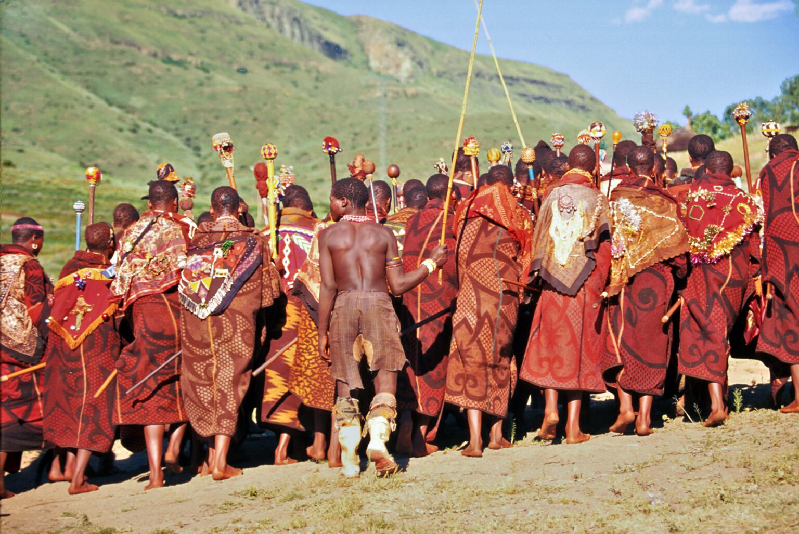

The Lesotho Cultural and Music Festival is one of the most exciting tourism events in the country. It brings together people from different parts of the world to celebrate culture and music. Visitors experience traditional Basotho performances like,famo, sesotho hop, mokhibo, mohobelo, ndlamo, selialia,and many more, also, traditional food, like, moholu, lihoapa, nyekoe, potele, mochahlama and others, also art in one vibrant setting which allows the locals and young people with multiple tallents to showcase their talents. The event promotes cultural exchange and strengthens tourism in Lesotho.
This festival is designed to attract both local who can stand a chance to know more about their culture and children also grow having love for their culture also for currency exchange and economy development. Again, international tourists who are interested in African culture. It creates a platform for artists, performers, and businesses to showcase their talents also for those who would like to showcase their handcrafts. The event also contributes to the local economy by supporting small businesses. Overall, it is a celebration of identity, unity, and entertainment.
The most popular cultural festivals in Lesotho include Morija Arts and Cultural festival which is held annually in Morija. it features art exhibitions, poetry, music, and theatre. promotes both traditional and morden Basotho culture. Also Moshoeshoe's Day Celebration which celebrates the life of King Moshoeshoe I. This event also happens annually in every distrct on the 11 march.

